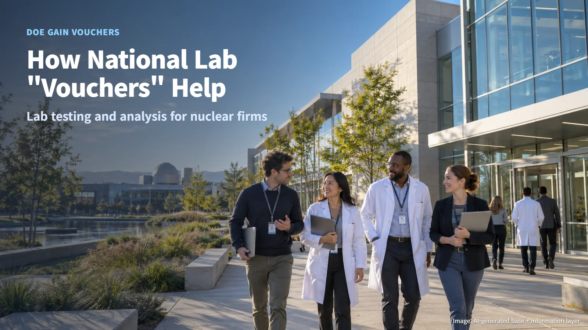
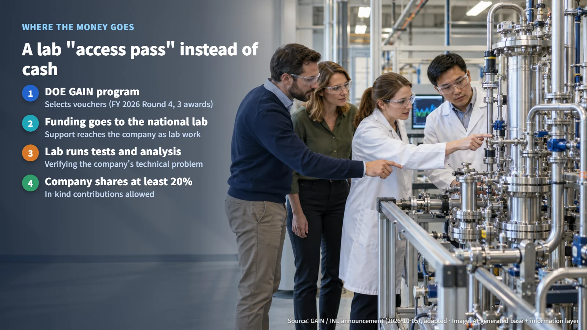
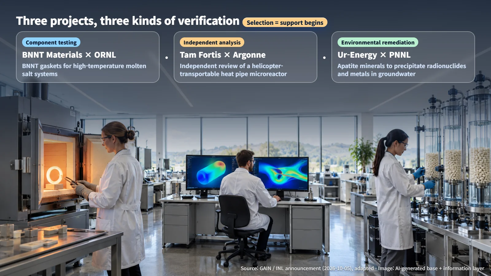

United States · Nuclear R&D Support
How National Laboratory "Vouchers" Help Nuclear Startups
DOE's GAIN program funds national laboratories to test and analyze technologies for nuclear companies, and its latest three vouchers show how that support works.
When you hear that a company is developing a new reactor or a new reactor component, a natural question follows: "High-temperature test rigs and precision analysis tools must be enormously expensive, so how does a small company manage?" In nuclear technology, a good idea is only the beginning. It has to be tested under realistic conditions and checked by calculation before it can move on to the next stage. Each of those steps calls for specialized equipment and experienced people, and that is where a voucher can make the difference.
On October 5, the U.S. Department of Energy's (DOE) GAIN program announced three nuclear energy technical assistance vouchers, and they offer one answer to that question. Let's look step by step at how the support works and what stage these projects have now reached.

How the Vouchers Work
On October 5, GAIN announced three nuclear energy vouchers in its fourth round for fiscal year 2026. Their purpose is to help companies overcome the obstacles they face as they develop and commercialize their technologies.
The key detail is the direction in which the money flows. The vouchers provide research funding to DOE national laboratories, and the companies then draw on those laboratories' research capabilities. Rather than receiving cash, a company receives something closer to an "access pass" to a laboratory.
The companies also contribute their own share. Each recipient must cover at least 20% of the cost, and that share can be an in-kind contribution. An in-kind contribution means adding to the project in a non-cash form, such as staff time or data, instead of money. This arrangement keeps both sides invested: the laboratory brings its facilities and expertise, and the company brings its own share of resources along with the specific technical problem it needs to solve.
Picture it this way. A company knocks on a laboratory's door, and instead of funds arriving in the company's bank account, the laboratory's test benches and researchers start working on that company's problem.

Three Projects, Three Kinds of Verification
All three selected projects deal with verification, but each one checks something different.
The first is component testing. BNNT Materials is working with Oak Ridge National Laboratory to verify BNNT gaskets for use in high-temperature molten salt nuclear systems. A gasket is a seal that closes the gap where two parts meet, keeping the fluid inside from leaking out; think of the rubber ring in the lid of a pressure cooker. Molten salt is salt heated until it melts into a liquid, and this project studies whether a sealing component can be used in that environment. High temperatures and a hot liquid salt place heavy demands on a seal, so a small part like a gasket needs its own careful testing before it can take its place in a larger system.
The second is independent analysis. Tam Fortis Solutions is working with Argonne National Laboratory to independently evaluate the neutronics and multiphysics characteristics of a heat pipe microreactor that can be transported by helicopter. A heat pipe is a sealed tube in which a working fluid repeatedly evaporates and condenses to carry heat, and a microreactor is a very small-scale nuclear reactor. Neutronics analysis calculates how neutrons move inside the core and how fission is sustained, while multiphysics analysis examines several intertwined physical phenomena, such as heat, flow and structure, together. The heart of this project is that a third-party research institution, separate from the developer, takes an "independent" look. When a second team works through the same physics with its own tools and expertise, the results give everyone a firmer basis for judging the design.
The third is environmental remediation. Ur-Energy USA is working with Pacific Northwest National Laboratory on research that uses apatite-group minerals to precipitate radionuclides and metals from groundwater in place. In-place precipitation means turning dissolved substances into solids and holding them underground, instead of pumping contaminated water to the surface for treatment. This project shows that verification in the nuclear field covers how materials behave in the natural environment as well as how hardware performs.
Set side by side, the three projects also show that recipients extend well beyond reactor developers. Companies in the materials and environmental fields are drawing on national laboratory research capabilities too.

Selection Marks the Start of Testing
Voucher selection marks the start of testing and analysis support. The next milestones are the test and analysis results themselves; reactor design licensing and verification of commercial performance are steps further down the road.
The moment a gasket first goes onto a laboratory test bench is the starting line. The tests may show that improvements are needed, and the analysis may point to areas to refine. Finding those points early is exactly what verification is for.
So when following projects like these, the most useful questions come after the selection news. Under what test conditions, and against what evaluation criteria, will the results be checked? And will those results be made public? It is also worth watching for the schedule of any follow-on demonstration, along with the input data, intellectual property terms and cost-sharing scope that each laboratory partnership involves. As answers to these questions accumulate, they build the evidence needed to judge how well a technology actually performs.
New nuclear technologies take shape through a series of steps. A company's idea meets a national laboratory's test bench, and they confirm things one by one. That process itself is the foundation that makes nuclear technology trustworthy.